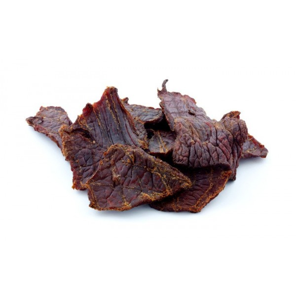

Introduction
In some parts of the USA, beef jerky is a very popular snack. It's very chewy, quite salty and good for your health.
After (buffalo) hunts, Native Americans dried their pieces of meat in the hot sun. They often worked berries and other foods into the meat. Scholars discovered that that is how their vitamin c levels remained high even in the winter months.
After drying, the meat weigh less (which helped their nomadic lifestyle) and highly preservable (enabling winter rations).
As the colonizers copied Jerky, so did Native Americans copy horse-riding (photo by Edward S. Curtis)
Recipe
- 700g Beef
- 3/5 cup Soy sauce
- 3/5 cup Worcester sauce
- 4Tbs Seasoning (pepper, salt, dried rosemary or thime
- 1Tbs Honey

1. Slice the beef rather thinly.
2. Make marinade remaining ingredients
3. Put steak into marinade and refrigerade for 1-24 hours (more is better)
4. Place in oven for 4 hours on 80 Celsius (175F) (Care for liquid leakage)
5. Optional: if you consume immediately, you can place it in oven for 1 hour on 120 Celsius, for very succulent pieces.
Further discovery
A Native American explains the cultural heritage of Native American Pemmican (beef jerky).